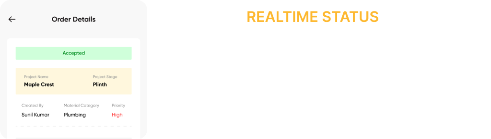
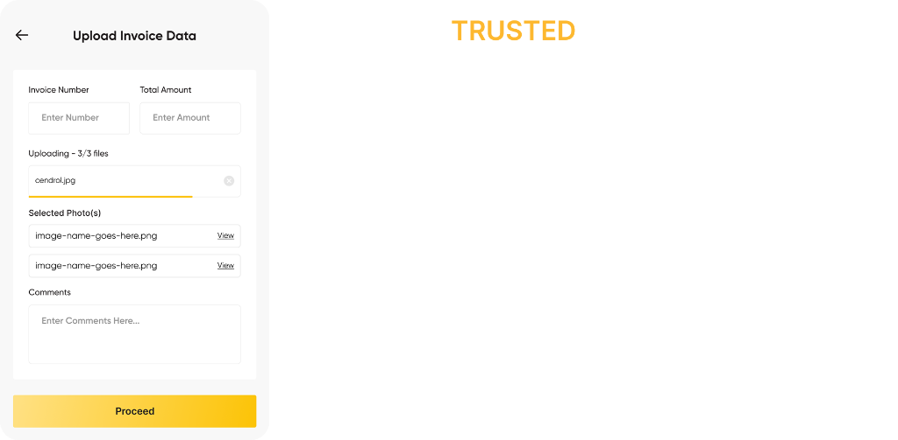
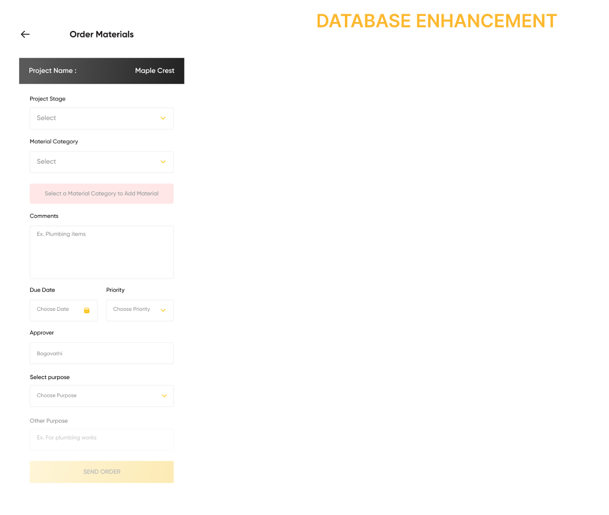

Helping Engineers Get Their Money Back—Faster
“Our guys are spending their children's school fee money on nuts and bolts.” — April, 2024
Know the status of the reimbursement from time to time in real-time.
Foolproof way to show proof of purchase through instant invoice scans and snaps of purchased materials.
Enhanced data collection through adding of additional materials for a stage or category of construction.
Rajesh, a seasoned site engineer at Cendrol Construct Bangalore, stands at a hardware store at 7 PM on a Tuesday evening. The project deadline is tomorrow, but they're missing critical fasteners that arrived defective this morning. The vendor won't deliver such a small quantity, and the accounting department closed hours ago. Rajesh reaches for his wallet, knowing he'll be out ₹3,000 of his own money with no guarantee of when he'll see it back.
This wasn't an isolated incident—it was the daily reality for engineers across 50+ construction sites, and it was slowly breaking both their spirits and their bank accounts.



Realtime Status
Know the status of the reimbursement from time to time in real-time. Exposing real-time tracking states stopped repetitive status inquiries via calls and chats.
Trusted Claims
A foolproof way to show proof of purchase through instant invoice scans and snaps of purchased materials. Reduces auditing back-and-forth between field and finance.
Database Enhancement
Enhanced data collection through adding of additional materials for a stage or category of construction. Helps project managers forecast budget overrides accurately.
Armed with curiosity and a notepad, I began what felt like detective work. I talked to anyone who would listen—project managers sharing war stories over coffee, accountants drowning in illegible handwritten receipts, and most importantly, the engineers themselves. Each conversation revealed another layer of the problem.
The Constraint That Almost Broke My Heart
Then came the moment that every designer dreads. Pooja looked at me sympathetically and delivered the news:
As someone who believed research was the foundation of good design, this felt like being asked to build a house without checking the soil. But sometimes, real-world projects don't wait for perfect processes.
Mapping the Journey of Pain
To map the landscape, we detailed the exact steps an engineer had to take just to get reimbursed. It was a journey of friction:
- 1. Material Urgency: Realize they needed construction materials urgently on site.
- 2. Out-of-Pocket Transit: Drive to vendors using their own personal vehicle fuel.
- 3. Personal Cash Flow: Pay with personal money (often borrowed from colleagues).
- 4. Physical Preservation: Keep paper receipts safe from dust, water, and tears (prayer required).
- 5. Manual Entry: Fill handwritten expense forms during lunch breaks.
- 6. Black Hole Submission: Submit forms to accounting and play the waiting game.
- 7. Continuous Chasing: Follow up repeatedly, feeling like they were begging for their own money.
Finding the Heroes and Villains
The heroes were obvious—hardworking engineers putting projects before personal financial comfort. But the villains weren't people; they were processes. The villain was a system that forced good people into impossible choices between project success and personal financial stability.
Armed with sticky notes and a whiteboard, I began sketching what felt like designing a financial lifeline. The solution needed to be three things: fast (engineers couldn't afford delays), foolproof (construction sites aren't known for perfect lighting and clean hands), and transparent (no more black hole submissions).
I started with paper sketches that looked more like treasure maps than wireframes. Each sketch told a story:
The Validation That Built Confidence
For the first time since starting this project, I felt like we were onto something. Pooja immediately approved moving to digital wireframes, and I felt the momentum shifting from skepticism to possibility.
Crafting the Perfect Solution
Using my mid-fidelity prototype, I walked everyone through Rajesh's new story. Instead of reaching for his wallet in despair, he'd open the app, snap a photo of the receipt, watch the app magically extract merchant details and amounts, tap submit, and immediately see "Submitted for Approval" with a timeline.
Then Questions Started Flying
- “What about fake receipts?”
- “Can the backend handle OCR?”
- “What if they lose phone signal?”
Stage 1 (Submitted): Your invoice images have been submitted and are queued for central accounting desk audits.
The design system became my co-author, ensuring consistency while I introduced new components. Progress bars became hope indicators. Status badges became transparency tools. Camera interfaces became magic wands that would transform crumpled receipts into structured data.
The founder leaned back in his chair. “This is elegant,” he said slowly. “But what about edge cases? What about abuse? What about the things we haven't thought of?” His questions weren't criticisms; they were the inquiries of someone who'd seen promising solutions fail in the real world.
My response came from the heart: “We can't solve every problem on day one. But we can solve the biggest problem—engineers using their own money and waiting weeks for reimbursement. Let's start there and learn.”
From Pixels to Code
Working with developers felt like being an architect watching builders construct your dream home. Every day brought new questions: “What happens if the OCR fails?” “How should error states behave?” “What if someone submits the same receipt twice?”
Each question was an opportunity to refine the story. We added graceful failure modes, clear error messages, and duplicate detection. The app wasn't just getting features; it was getting wisdom.
The Real-World Test
The pilot test began with three volunteer engineers who'd been most vocal about reimbursement problems. They became our beta testers, our canaries in the coal mine, our real-world validators. For two weeks, they used the new feature for every out-of-pocket purchase.
The Victory Lap
The final presentation to the founder felt like a movie epilogue. We had data, testimonials, and proof of concept. But more importantly, we had transformed a source of daily stress into a point of pride.
Lessons from the Trenches
This project taught me that great UX design isn't always about following perfect processes—sometimes it's about adapting to real-world constraints while maintaining focus on user needs. Working under tight deadlines and research limitations, I learned to find story elements in every stakeholder conversation and treat each constraint as a plot device rather than an obstacle.
The most rewarding aspect wasn't the technical achievement or design accolades—it was knowing that somewhere in Bangalore, an engineer like Rajesh can buy urgent materials without the financial anxiety that once kept him awake at night. That's the kind of story worth telling, and the kind of problem worth solving.